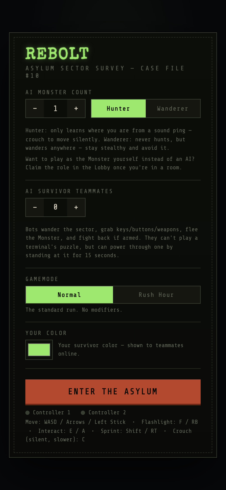
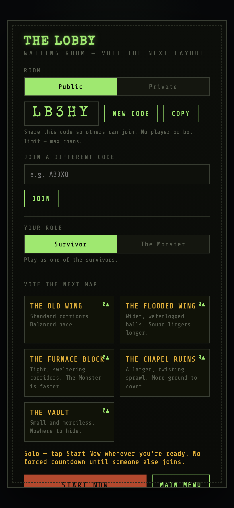
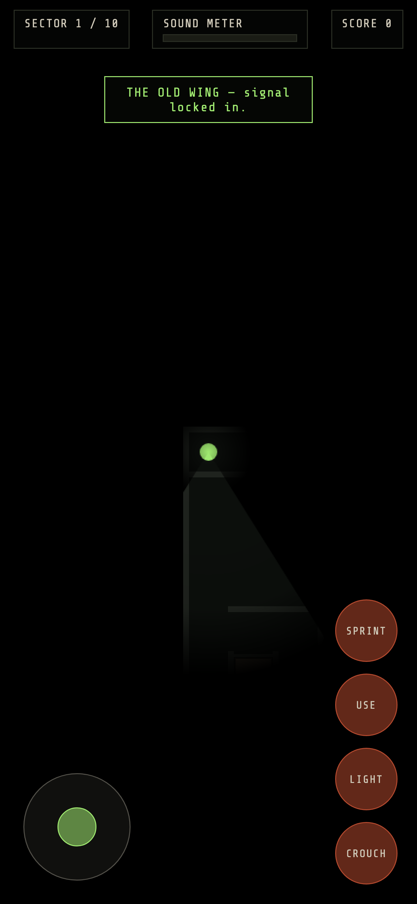
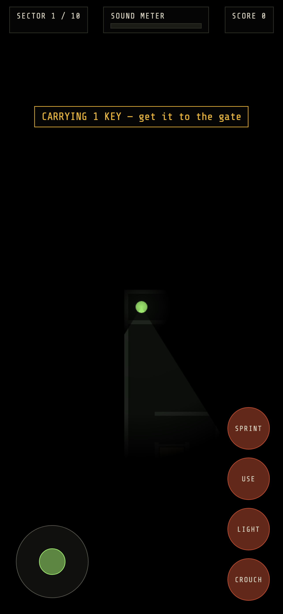

The Monster is listening, not watching
The Hunter doesn't see you — it hears you. Move loudly and it gets a sound ping straight to your location. Crouch to move in total silence, but slower. Every choice trades speed for staying hidden.
Play either side
Work with a team of survivors, or claim the Monster role yourself in the lobby and hunt real players instead of AI. Playing solo? Bring AI teammates who scavenge keys, flee danger, and fight back if armed.
Flashlights that matter
Your flashlight cuts through the dark but gives away your position — other players can spot your light glowing from across a room, and every beam stops dead at a wall.
Five maps, two gamemodes
Vote on which wing of the asylum you're running: the balanced Old Wing, the sound-swallowing Flooded Wing, the fast Furnace Block, the sprawling Chapel Ruins, or the merciless Vault. Play it straight, or crank Rush Hour for a run where everyone moves faster from the first second.
Built for pick-up-and-play
Drop-in multiplayer with room codes, no accounts required. Full touch controls and gamepad support. Getting caught doesn't end your run — spectate live and watch your team try to finish it without you.